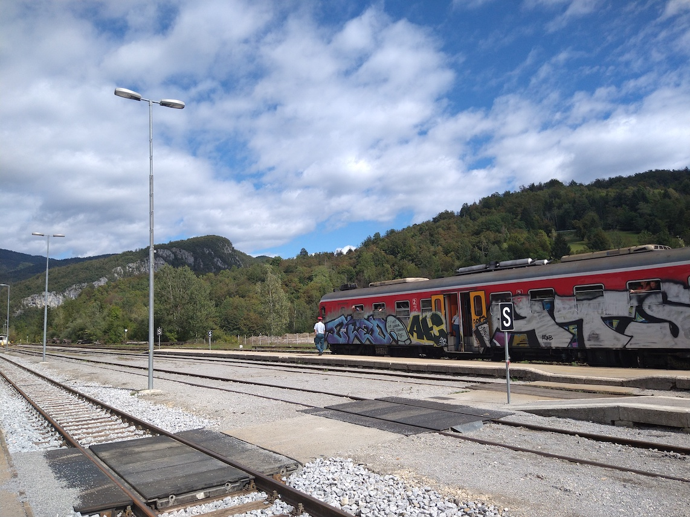
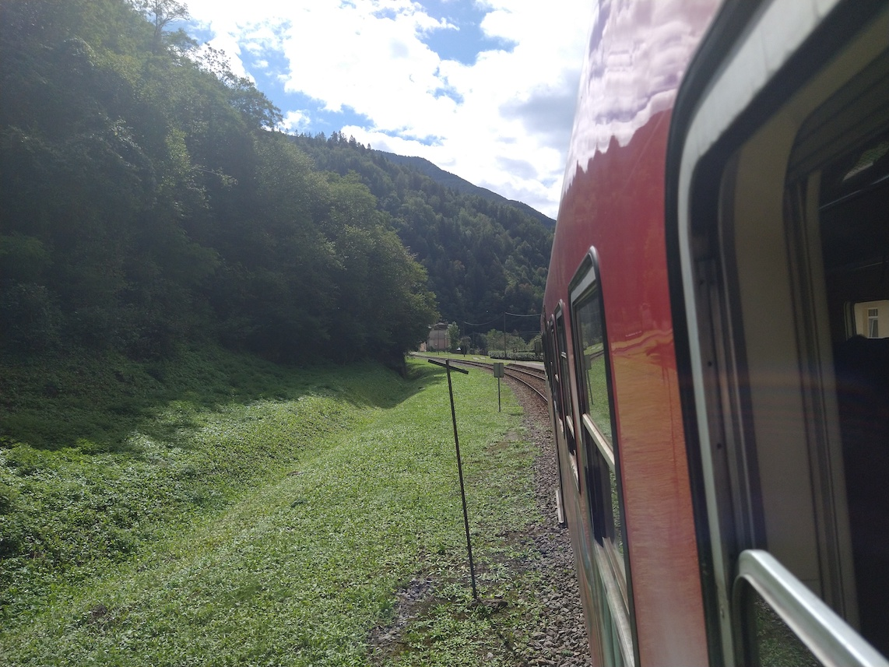
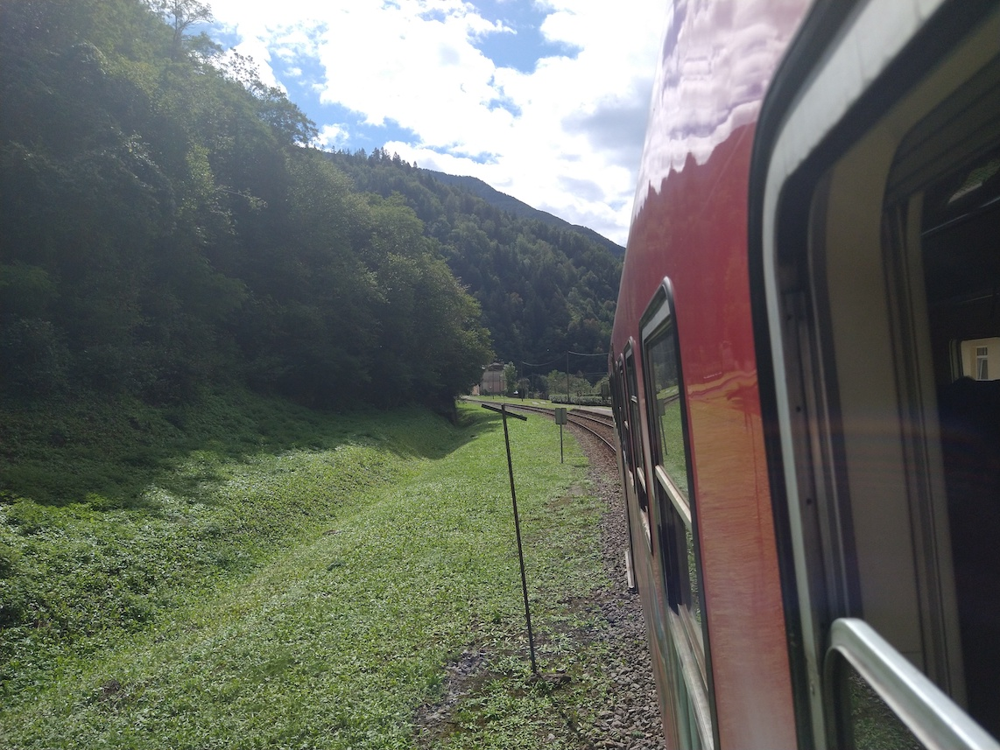
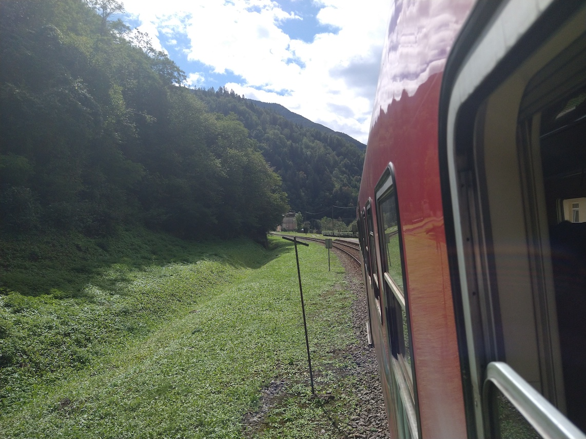

While Slovenian trains may not be very fast (or frequent), they're a wonderful way to explore the scenery of this
amazing country. These photos were taken (at different times) on the very scenic Transalpina Railway, mainly used
by diesel-powered local trains.
A train waiting at the station; this line is entirely unelectrified and single-tracked.
This station is also connected to Italy, however that section of track is only used by freight.

Another local train, waiting to depart at Bohinjska Bistrica. As with most of the stations on
the Slovenian network, to go between platforms you have to physically cross the tracks.

Of course, the views you can see when travelling on this line are absolutely wonderful.

 
